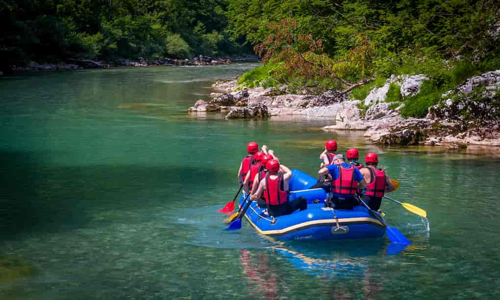

Family Splash
Perfect for first-timers and families with children. This gentle 2-hour ride takes you through the beautiful, scenic lower sections of the Hidromiel river. Enjoy light rapids, opportunities to swim, and breathtaking wildlife sightings. No previous experience is required, and our expert guides ensure a safe, fun environment for everyone.